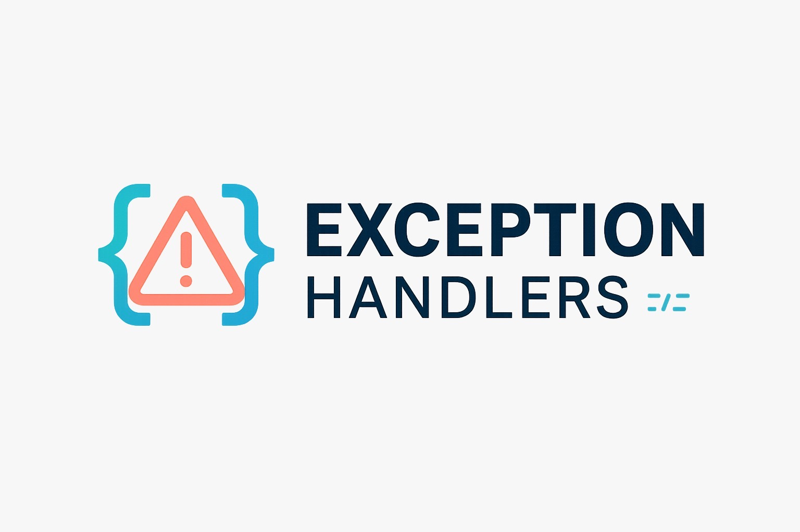

Code Masters
concluídoAplicação web desenvolvida no 1º semestre para estimular o aprendizado prático em equipe, propondo que os estudantes criassem soluções próprias enquanto desenvolviam habilidades de programação.
Repositório$ whoami
Estudante de Desenvolvimento de Software Multiplataforma na FATEC Jacareí, atualmente no 4º semestre.
Curso Desenvolvimento de Software Multiplataforma na Fatec Jacareí, com formação técnica em Informática pelo Instituto de Tecnologia de Jacareí (ITJ). Meu trabalho ao longo do curso tem sido majoritariamente baseado em projetos reais — a Aprendizagem Baseada em Projetos (ABP) — normalmente em equipe, do banco de dados à interface. Este portfólio documenta essa trajetória.
Quatro ciclos de ABP, do primeiro semestre ao projeto atual em desenvolvimento.
Aplicação web desenvolvida no 1º semestre para estimular o aprendizado prático em equipe, propondo que os estudantes criassem soluções próprias enquanto desenvolviam habilidades de programação.
Repositório
Aplicação web do 2º semestre para visualização e disseminação de dados limnológicos coletados pelo INPE, subsidiando estudos sobre o Balanço de Carbono nos Reservatórios de Furnas Centrais Elétricas S.A.
RepositórioCRM full-stack de gestão de leads para a concessionária 1000 Valle Multimarcas, construído em equipe ao longo de múltiplas sprints: kanban de leads, fluxo de negociação com validação de estágios, dashboard analítico, autenticação JWT com controle de acesso por papel e testes unitários.
RepositórioNovo ciclo de ABP, ainda em fase de imersão — detalhes do projeto chegam conforme a definição do escopo com a equipe.
Repositório em breveAlguns hábitos que vieram se repetindo de projeto em projeto.
Já passei pelas duas pontas em mais de um projeto: modelagem de dados relacional e não-relacional, API e interface — do 1000 Valle ao L'Alliance P&M.
Entrega incremental faz parte da rotina: o Sistema de Leads da 1000 Valle avançou em sprints sucessivas, com backlog revisado a cada ciclo.
Bug de codificação corrompendo JSON, conflito de nomes de variável, arquivo legado escondendo uma pasta inteira — resolver esse tipo de problema é parte do trabalho, não uma exceção.
A maior parte dos meus projetos de ABP foi construída em grupo, com controle de versão compartilhado entre os membros da equipe.
Onde ficam as atividades e estudos que não são projetos de ABP.